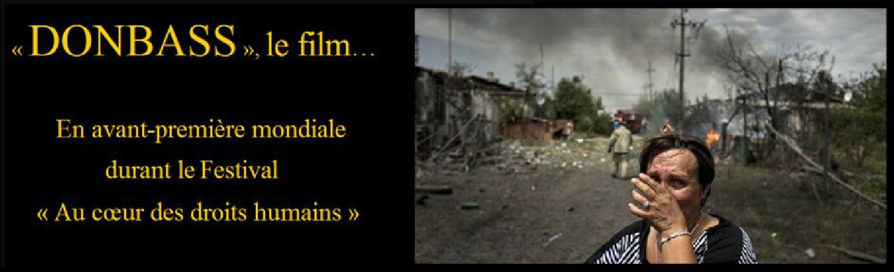
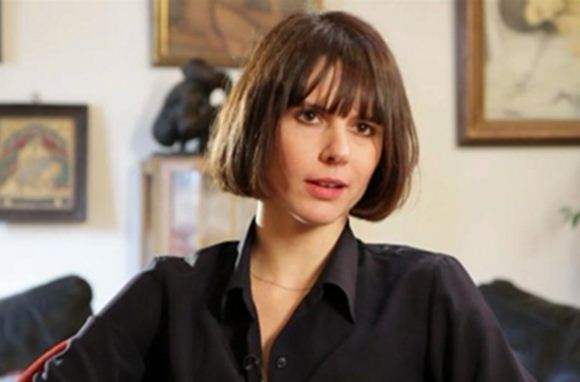
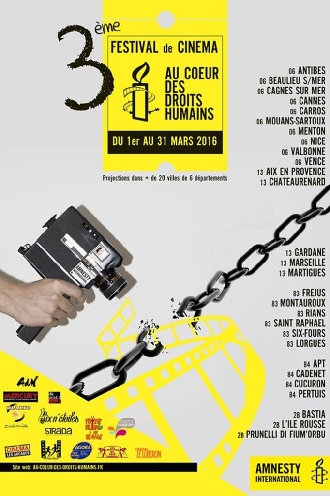
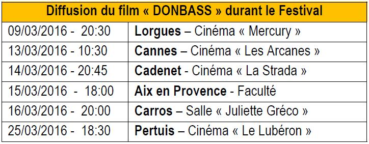
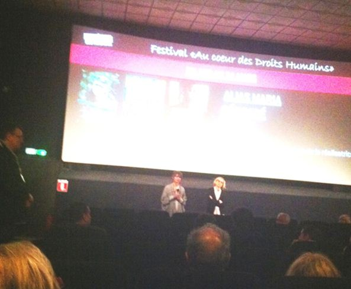
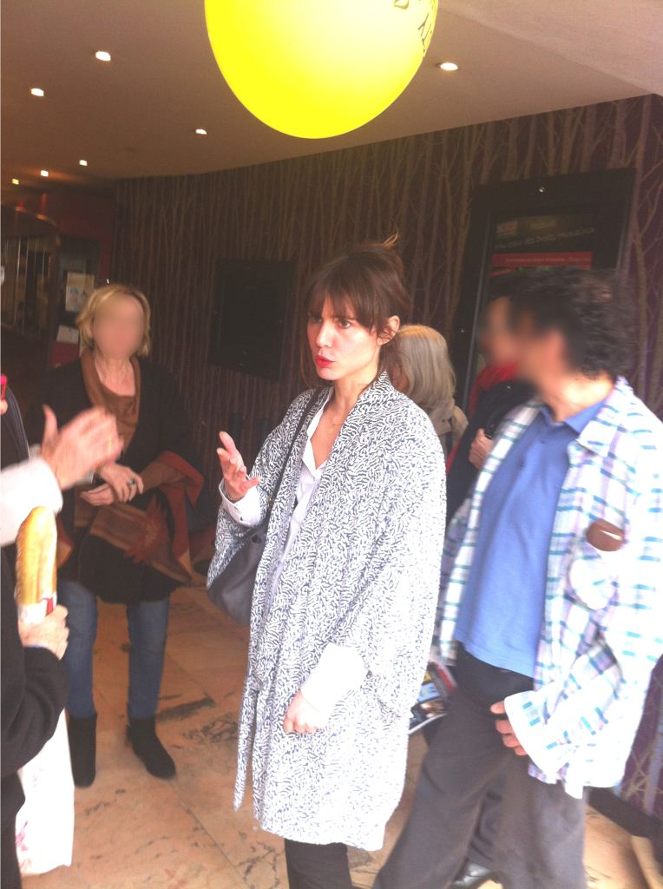

« Donbass », le film... : en avant-première mondiale durant le Festival « Au cœur des droits humains »

« La meilleure manière de prévenir la violence est de passer par des images qui montrent combien la guerre est brutale. Sans les photographies de Dresde en ruine, la destruction de la ville aurait été depuis longtemps effacée de la mémoire du monde et n’agirait plus comme mise en garde contre des conflits armés » Guenter Blobel, prix Nobel de la paix.
La troisième édition du Festival « Au cœur des droits humains », se déroule en ce moment et durant tout le mois de mars dans 31 villes de la région Provence-Alpes-Côte d’Azur et de Corse.
Des films de grande qualité, souvent sélectionnées et primés dans des festivals internationaux, ont été choisis pour cette troisième édition. Les participants ont bien sûr accès à la projection mais peuvent ensuite débattre avec les réalisateurs, les acteurs et des personnes issues de la société civile et engagées dans les nombreuses associations partenaires.
C’est dans le cadre de ce festival qu’Anne-Laure Bonnel présentera, en avant-première mondiale, son dernier film documentaire « Donbass » qu’elle était venu filmer il y a tout juste un an.
Au cours de son tournage, la rédaction de « Sans Frontières » avait eu le bonheur de s’entretenir avec elle pendant sa visite de l’Université Nationale Technique de Donetsk. Durant cette interview, elle nous avait confié avoir pu mesurer l'ampleur de la désinformation des médias français entourant le récit fait de cette guerre.
« Avec l'équipe de tournage, nous avons donc voulu comprendre ce qu'il se passait réellement, sur le terrain, à l'est de l'Ukraine. Les médias nous avaient parlé d'une opération « anti-terroriste » et nous avons constaté une fois sur place une guerre civile, une région totalement anéantie, un blocus économique, une situation alarmante très éloignée de la description floue et partielle délivrée sur nos ondes nationales et internationales. Nous avons pris depuis conscience que nos démocraties sont capables de torturer, d’emprisonner sans juger, d’humilier gratuitement, de qualifier hâtivement de terroriste celui considéré comme l'ennemi. Le recul que nous apporte la distanciation des faits nous permet d'appréhender l'étendue de ce relativisme politique et militaire. Parler de ce qu'il passe à l'heure actuelle dans la région du Donbass, c'est interroger en temps réel la guerre, les bombardements, les meurtres de civils, sans attendre d'avoir le recul pour comprendre trop tardivement. »
Au cœur de la guerre, Anne-Laure Bonnel a su capter les images terribles d’un conflit meurtrier et d’un désastre humanitaire sans précédent. Car filmer la guerre ce n’est pas seulement filmer les combats, mais aussi ce qui s’y trouve autour. Dans son hors-champs, des populations entières essaient de vivre ou plutôt de survivre. « Donbass » leur donne alors la parole.
A travers son documentaire, Anne-Laure Bonnel se penche sur le conflit dans son universalité et filme cet « à côté » trop souvent occulté, ces coulisses de la mort.
La réalisatrice infiltre ainsi le quotidien des populations civiles. Prisonnières de cette situation, elles sont les premières victimes du conflit. A travers l’œil de sa caméra, Anne-Laure Bonnel capte leurs cicatrices, leurs plaies, celles qu’on ne voit pas mais qui dureront des années : la peur, le deuil, le chaos.
Par ses images authentiques et exigeantes, « Donbass » est une métaphore contemporaine de la guerre qui se regarde à hauteur d’homme, loin de toutes considérations politiques. Le film se construit comme des fragments de douleur sur la vie quotidienne de gens ordinaires. Un travail qui ne se situe pas dans le voyeurisme mais dans l’humanisme pour comprendre que la paix est un combat de tous les instants.
L’espoir de notre réalisatrice ? Que ces quelques images changent non seulement la vie de ceux qui sont filmés mais aussi la vie de ceux qui regardent ces images.
Grâce au festival « Au Coeur des Droits Humains », un large public va pouvoir découvrir que la réalité du Donbass ne correspond en rien aux informations dont les médias les abreuvent. Souhaitons à Anne-Laure Bonnel que son film soit primé. Bien sûr parce que cela récompensera son magnifique travail, mais peut-être plus encore parce que son film aura d’autant plus de chances d’être acheté et surtout diffusé.
Le 13 mars 2016 à Cannes, notre nouveau correspondant, Michel Mogniat a visionné la projection du film Donbass, où il a rencontré la réalisatrice du film Anne-Laure Bonnel. L'équipe de Sans Frontières vous présente un article exclusif concernant les premières impressions de ce film.
Donbass
« Ce que j’ai vu dans le Donbass m’a immédiatement fait penser au roman de Cormac McCarthy, La Route. » Dit Anne-Laure Bonnel à propos du Donbass actuel, région située à l’Est de l’Ukraine. Elle illustre très bien cela dans son film « Donbass » qui sortira en salle en septembre 2016. Une projection en avant première, en présence de la réalisatrice a eu lieu à Cannes le 13 mars 2016, dans le cadre du Troisième festival de cinéma « Au cœur des droits humains » organisé par Amnesty International.
 Dans une salle captivée, le débat après la projectionAnne-Laure Bonnel est enseignante de cinématographie à l’Université Paris 1 Panthéon-Sorbonne et à l'INA jumelé à l'École Normale Supérieure de Cachan. Après avoir entendu avec effarement les propos du Président Porochenko, https://www.youtube.com/watch?v=ZYoOCz65KY8 en 2014, elle fait ses valises pour la région du Donbass en embarquant sa caméra et elle filme. Elle filme, à ses risques et périls - un de ses assistants y laissera la vie -, une zone d’Europe dévastée par la guerre et sur laquelle les médias occidentaux font silence. Une guerre fratricide qui ne dit pas son nom : deux millions de personnes ont quitté la région, dix mille sont mortes sous des bombardements dont on ne parle jamais.
Le Président Porochenko avait promis aux habitants du Donbass qu’il vivraient dans les caves et il a tenu parole. Les retraites ne sont plus versées, les obus frappent au hasard, sans cibles précises, n’épargnant pas les immeubles d’habitation, les hôpitaux, les bâtiments civils. Les gens se terrent. C’est dans les caves, interrogeant les habitants, que le film d’Anne-Laure se déroule en grande partie. Le premier témoignage démarre très fort : une jeune mère de famille berce à l’hôpital son unique enfant survivant, gravement blessée ; les deux autres sont morts sous les bombes. La réalisatrice déploie un grand art du cinéma : filmer la guerre et la misère sans tomber dans le pathos ou le macabre. Les tortures sont pourtant monnaie courante, on a retrouvé, jetés dans des puits, des corps mutilés aux oreilles coupées ou des corps décapités. Pas de scènes d’horreur pourtant, mais de simples évocations, des témoignages de gens simples qui ne demandent qu’une chose : que cesse toute cette horreur !
 Dans une salle captivée, le débat après la projectionLeur crime ? Habiter le Donbass et parler russe, ce qui ne plait pas du tout au gouvernement de Kiev.
La seule aide humanitaire, apportant du ravitaillement arrive par la Russie.
Toutefois, le film repose sur une ambiguïté, il est constitué de témoignages de personnes non combattantes qui souffrent de la guerre, et Anne-Laure Bonnel nous montre les effets de cette guerre, sans en dire les causes. Ces causes sont à rechercher dans l’histoire de l’Ukraine, et l’histoire remonte toujours très loin en arrière. Un tournant sérieux semble pourtant s’être opéré dans les années 2010 qui a poussé les habitants du Donbass à faire partition. C'est le 11 mai 2014 que Donetsk fit son référendum d’autodétermination. Ce référendum ne fut pas reconnu, ni par l’Union Européenne, ni par les États-Unis et la Russie resta muette. Parler des causes de cette guerre civile c’est faire un acte politique et il faut pour cela avoir connaissance de l’histoire, ce que je n’ai pas ; même si je sais certaines choses et peut en déduire d’autres. Ce qui semble évident à tous pourtant, est que l’enjeu de l’autonomie de Donbass dépasse cette région de l’Ukraine. Le fait que l’Ukraine soit aujourd’hui sous une forte influence américaine, pour ne pas dire plus, place directement les troupes de l’OTAN à la frontière russe. Cela n’est certainement pas un facteur à laisser de côté et n’arrange pas les choses. La chose utile à faire cependant, est de dénoncer avec force et de faire connaître autour de soi les conditions de vie qui sont celles des habitants du Donbass aujourd’hui. C’est là le rôle de chacun, faire le « buzz », avertir, en parler, informer le plus possible les opinions. Ce ne sera peut-être pas inutile pour que cessent ces atrocités. C’est là que se situe la réussite du film d’Anne-Laure Bonnel : donner envie de parler du Donbass autour de soi.
Partager cette page